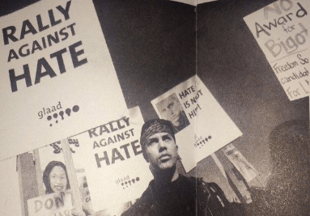
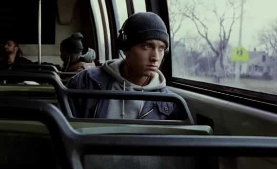
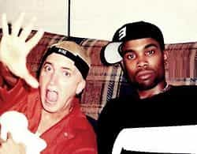
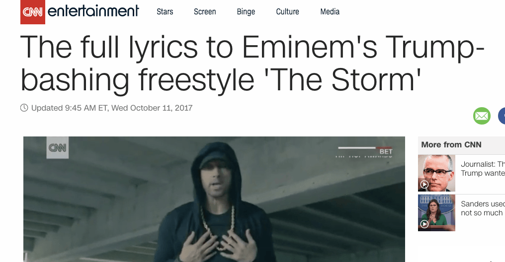

Alfonso Taft is a surfer stoner All-American Aryan alpha male quarterback. Raised in the Northeast, he speaks with a Southern twang for no apparent reason. Host of America's #1 Chadcast.


I was ten years old when my father bought the Marshall Mathers LP. I sat in the passenger’s seat of my father’s black Nissan Altima as he inserted the CD into the car’s stereo while we winded through cold, woodsy, New Hampshire roads. The intro began to play. He turned the car’s stereo up to full volume. Then, something happened I would remember for the rest of my life; the beat dropped.
The Marshall Mathers LP was released in the year 2000 and sold 1.75 million copies in its first week of sales. Today, the album is 32-times platinum.
Before his reign as Cuckmander-in-Chief, Eminem was a Captain of controversy and titan of uncensored artistic expression. Because of his use of the word, “fag,” Eminem was constantly protested by angry LGBT groups. Before SJWs were blocking ambulances, rioting at colleges, and demanding multicultural global communism, they were protesting artists. Little did we know back then, these small radicalized groups would eventually turn into the genderless mobs of hate, intolerance, obesity and homosexuality.

Ontario Attorney General Jim Flaherty once attempted to stop Eminem from crossing the Canadian border. Harvard Lawyer Michael Bryant suggested Canada allow Eminem entry only so he could be arrested for violating Canada’s hate crime laws.
Lynne Cheney (wife of Dick Cheney) cited the Marshall Mathers LP in a Senate Hearing demanding age restrictions on album sales. When describing the song Kill You Cheney told the court, Eminem “talks about using O.J.’s machete on women.”
At the height of his career in 2002, Eminem starred in blockbuster movie, 8 Mile. The film is loosely based on his life.
Eminem’s character B-Rabbit was literally cucked in the film. During a trip to a recording studio, B Rabbit walked in to find his love interest, played by an overdosed Brittany Murphy, getting fucked by one of his African associates. His character’s cucking in 8 mile was symbolic of where Eminem’s life and career would head from that point on.

Fast Forward to 2018. Eminem is no longer the young, angry, artistic alpha male he once was. Today, he is Cuckmander Supreme, Captain Cuck, a Category 5 Cucknado. One must ask, how did this transformation occur? What lead to the cuckening of Slim Shady and what can ROK readers learn from his rise & demise?
Musician Eminem attends the premiere of “Southpaw” in New York July 20, 2015
When Eminem saw his estranged wife kissing another man in 2001, Eminem pistol-whipped the man and later plead guilty to concealed weapons charges. Eminem often raps about killing his twice-divorced wife Kim.
Would you bang?
The young Eminem was able to turn a negative into a positive by rapping about his issues with his drug addicted single mother, absentee father, and estranged wife. He had so much trouble being bullied and growing up in a low-income single parent home that he made a lucrative career out of his issues.
Eminem started acting like his single mother in terms of popping pills. After years of drug abuse, he began to identify with her. Eminem first went to rehab in 2005 because of an addiction to sleeping medication.
“It’s no secret I had a drug problem,” he said in an interview. “If I was to give you a number of Vicodin I would actually take in a day? Anywhere between 10 to 20. Valium, Ambien, the numbers got so high I don’t even know what I was taking.”
“My doctor told me the amount of methadone I’d taken was equivalent to shooting up four bags of heroin. Even when they told me I almost died, it didn’t click.”
‘Cause every time I try to tell ’em “no”
They won’t let me ever let ’em go
I’m a sucker all I gotta say
These drugs really got a hold of me

Eminem’s childhood best friend, bandmate, hype man, and rapper Proof was shot to death on 8 Mile Road, in Detroit, Michigan on April 11, 2006. This had a profound impact on Eminem and lead him down a path of hardcore pharmaceutical drug abuse.
After he became sober, Eminem drew a line in the sand in regards to his fans who support President Trump by dropping some of the weakest lyrics of his career.
“That’s an awfully hot coffee pot. Should I drop it on Donald Trump? Probably not”
Eminem’s new lyrics are so lame they are immediately posted on CNN—that’s how congruent with the establishment he’s become. A far cry from his heyday, where he would routinely lay down rhymes like:
Hillary Clinton tried to slap me and call me a pervert
I ripped her fuckin’ tonsils out and fed her sherbet

Donald J. Trump is yet to respond to Eminem’s corny raps and probably never will. Eminem is Donald Trump’s Stan and Em is becoming obsessive and weird. Eminem recently attacked the NRA and recorded a song with Beyoncé.
Culturally, he’s cucked, but he’s still super rich and selling a ton of albums. For many, a young, boisterous, rebellious Eminem is the one we choose to remember. Long gone, Eminem is shilling for the establishment as he enters the new genre of Boomer rap.